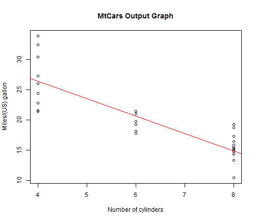

Shiny application "Simple MtCars DataSet Graphical Explorer" allows to build graph with user selected X and Y axis variables of "mtcars" dataset.
Also, it's possible to put regression line on the graph.
Evgeny Kuznetsov
student
Shiny application "Simple MtCars DataSet Graphical Explorer" allows to build graph with user selected X and Y axis variables of "mtcars" dataset.
Also, it's possible to put regression line on the graph.
Graph with user selected X and Y axis variables of "mtcars" dataset.
Regression line is visible if user checked box.
numX <- 2; numY <- 1; showfit <- TRUE; rowdesc <- c("Miles/(US) gallon", "Number of cylinders")
plot(mtcars[,numX], mtcars[,numY], main = "MtCars Output Graph", xlab = rowdesc[numX], ylab = rowdesc[numY])
if (showfit) abline(lm(mtcars[,numY] ~ mtcars[,numX]), col = "red")
